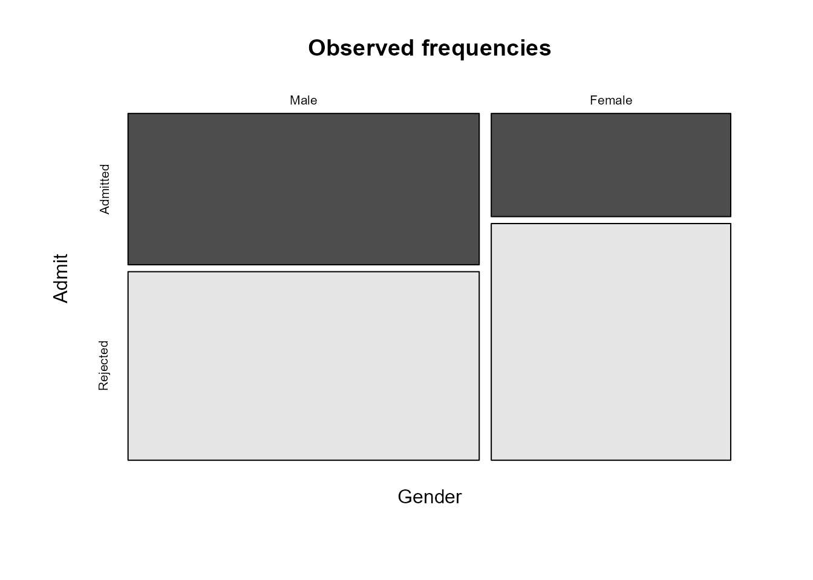
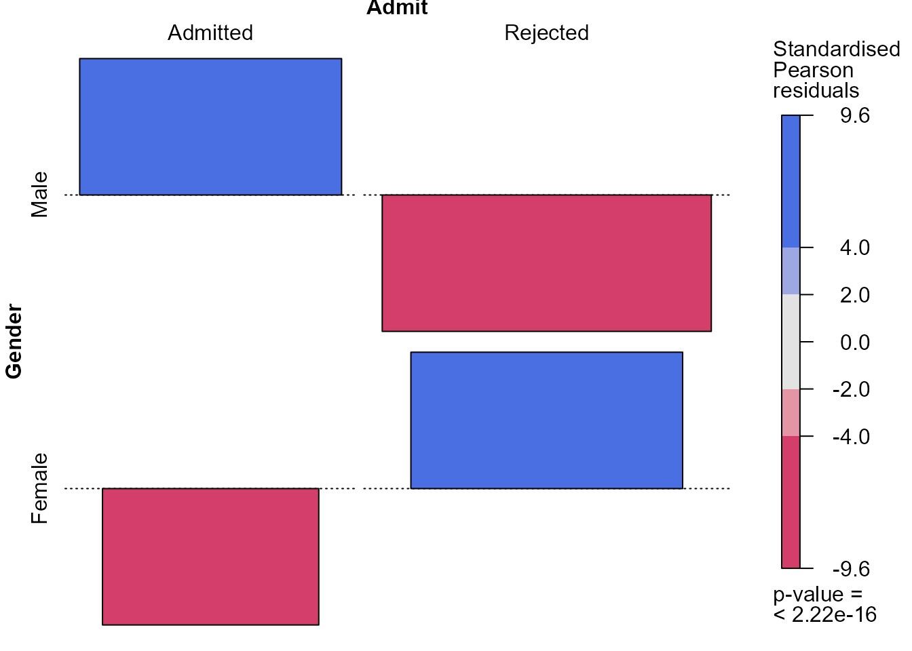
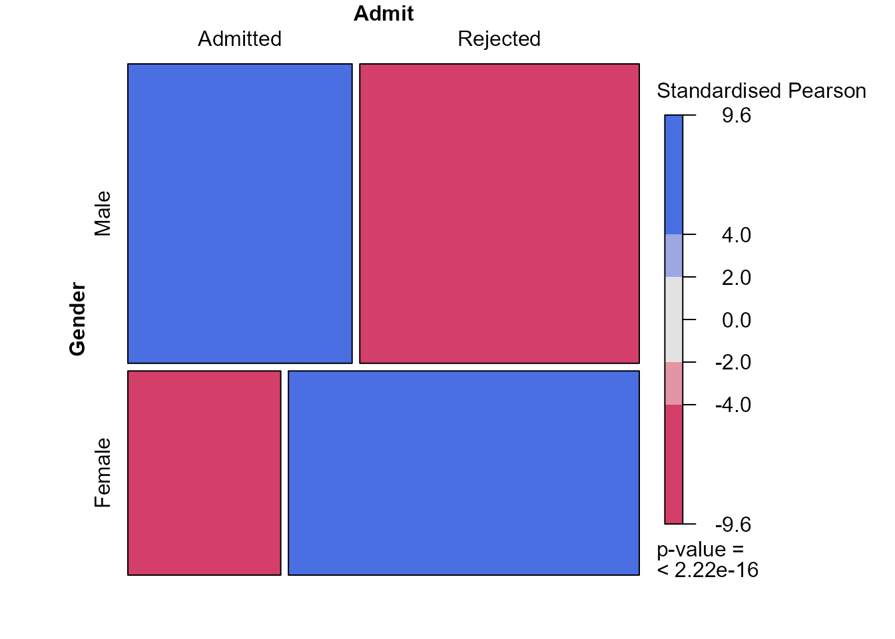
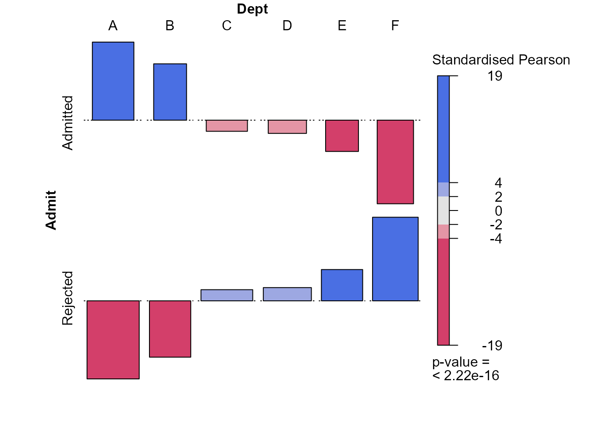

Chapter 8: Contingency tables
Paul Northrop
Source:vignettes/stat0002-ch8-contingency-tables-vignette.Rmd
stat0002-ch8-contingency-tables-vignette.RmdThis vignette provides some R code that is related to some of the content of Chapter 8 of the STAT0002 notes, namely to Contingency tables. It also contains some technical information about classes of R objects and the way in which this affects what R does when we call functions to operate on an object. If this interests you then that’s great, but otherwise focus on what the code below does rather than exactly how it works.
Graduate Admissions at Berkeley
We return to data that we considered briefly in the Chapter
3: Probability article. The object berkeley is a
3-dimensional array that contains information about applicants to
graduate school at UC Berkeley in 1973 for the six largest departments.
Use ?UCBAdmissions for more information. The 3 dimensions
of the array correspond to the gender of the applicant (dimension named
Gender), whether or not they were admitted (named
Admit) and a letter code for the department to which they
applied (named Dept). A given entry in
berkeley gives the total number of applicants in the
corresponding (Admit, Gender,
Dept) category. In Chapter 3, we viewed these data are
relating to a population containing the 4526 people who applied to
graduate school at Berkeley in 1973 and did not seek to generalise
beyond this population. In other words, we treated the relative
frequencies in the various categories as known probabilities. Now, we
view these data as a sample of data that may help us to make inferences
about the application process at Berkeley in general. We will explore
associations between the categorical variables (Admit,
Gender, Dept), or perhaps just two of these
variables. Note that, following standard statistical terminology, R
refers to categorical variables as factors and the
possible values of these factors as levels.
> library(stat0002)The data
The berkeley dataset is a \(2
\times 2 \times 6\) contingency table. For each of the 6
departments involved there is a \(2 \times
2\) table for variables Admit and
Gender.
> # Find the dimensions of the data
> dim(berkeley)
[1] 2 2 6
> # What type of R object is berkeley?
> class(berkeley)
[1] "table"
> # Print the data
> berkeley
, , Dept = A
Gender
Admit Male Female
Admitted 512 89
Rejected 313 19
, , Dept = B
Gender
Admit Male Female
Admitted 353 17
Rejected 207 8
, , Dept = C
Gender
Admit Male Female
Admitted 120 202
Rejected 205 391
, , Dept = D
Gender
Admit Male Female
Admitted 138 131
Rejected 279 244
, , Dept = E
Gender
Admit Male Female
Admitted 53 94
Rejected 138 299
, , Dept = F
Gender
Admit Male Female
Admitted 22 24
Rejected 351 317Classes of R objects
Many objects in R have a class attribute that that
contains a (character) vector of names, perhaps just one name, that
describes what type of object it is. This is useful because for some
types of object have standard methods are provided, to
perform common tasks like printing, summarising and plotting. In the
code above, instead of typing berkeley we could have typed
print(berkeley). When we do this R searches for an
appropriate way to print to the R Console the object
berkeley, which has class "table". R looks
for, and finds, a function print.table to use to do this
printing. We will come back to this later, for example when we consider
producing plots of contingency table data.
2-way tables
We collapse the 3-way table to a 2-way table by
ignoring the values of one of the 3 categorical variables. One way to do
this is to use the xtabs function in the stats
package, which comes as standard when you install R. To use
xtabs we first modify the structure of the data from a
table to a data frame using the function as.data.frame.
Then the following call to xtabs creates a 2-way table in
which frequency Freq is classified by Gender
and Admit. We have aggregated (summed) Freq
within each Gender-Admit category, over all the values of
Dept. Similarly, we could ignore Gender or
Admit to produce a 2-way table for the remaining two
variables.
> berkdf <- as.data.frame(berkeley)
> berkdf
Admit Gender Dept Freq
1 Admitted Male A 512
2 Rejected Male A 313
3 Admitted Female A 89
4 Rejected Female A 19
5 Admitted Male B 353
6 Rejected Male B 207
7 Admitted Female B 17
8 Rejected Female B 8
9 Admitted Male C 120
10 Rejected Male C 205
11 Admitted Female C 202
12 Rejected Female C 391
13 Admitted Male D 138
14 Rejected Male D 279
15 Admitted Female D 131
16 Rejected Female D 244
17 Admitted Male E 53
18 Rejected Male E 138
19 Admitted Female E 94
20 Rejected Female E 299
21 Admitted Male F 22
22 Rejected Male F 351
23 Admitted Female F 24
24 Rejected Female F 317
> ga <- xtabs(Freq ~ Gender + Admit, berkdf)
> ga
Admit
Gender Admitted Rejected
Male 1198 1493
Female 557 1278If we think about how the variables in this 2-way table may be
related we might imagine that Gender could affect the value
of Admit, that is, the gender of the applicant could affect
the probability that the applicant is admitted. That is,
Gender could have a causal effect on Admit,
which is the main variable of interest in this example. In cases like
this, we call Admit the response variable
and Gender the explanatory variable
because Gender may explain variation in the response
variable Admit. It is natural to consider conditional
probabilities of the levels of Admit given the value of
Gender and we may wish to create our plots with this in
mind.
Functions are available for calculating the totals and proportions that appear in Section 8.1 of the notes and in the Berkeley example in Chapter 3 of the notes.
> # Total number of applicants
> marginSums(ga)
[1] 4526
> # Number of males and females
> marginSums(ga, "Gender")
Gender
Male Female
2691 1835
> # Number of admitted and rejected applicants
> marginSums(ga, "Admit")
Admit
Admitted Rejected
1755 2771
> # Add the marginal totals to the table
> addmargins(ga)
Admit
Gender Admitted Rejected Sum
Male 1198 1493 2691
Female 557 1278 1835
Sum 1755 2771 4526
> # Calculate proportions (relative frequencies)
> proportions(ga)
Admit
Gender Admitted Rejected
Male 0.2646929 0.3298719
Female 0.1230667 0.2823685
> # Row proportions (sum to 1 across the rows)
> proportions(ga, "Gender")
Admit
Gender Admitted Rejected
Male 0.4451877 0.5548123
Female 0.3035422 0.6964578
> # Column proportions (sum to 1 down the columns)
> proportions(ga, "Admit")
Admit
Gender Admitted Rejected
Male 0.6826211 0.5387947
Female 0.3173789 0.4612053What class does ga have?
> class(ga)
[1] "xtabs" "table"Plotting frequencies
The object ga has 2 things in its vector class names:
"xtabs" and "table". This means that we have
available to us any methods functions that have been created for use on
objects of class "xtabs" or class "table". If,
for example, we use the code plot(ga) then, because
"xtabs" appears first in the vector of class names, R looks
first for a function called plot.xtabs. If it does not find
a function with this name then it looks for plot.table. If
it finds neither then it uses the function plot.default.
The function plot.default definitely exists, but because it
has not been designed for a specific input object then it might not
work. In this case, there is no function plot.xtabs but
there is a function plot.table. If the table has at least 2
factors then plot.table produces a plot using the function
mosaicplot in the graphics package, which also
comes as standard when you install R. Let’s see what happens if we do
this.
> plot(ga, main = "Observed frequencies", color = TRUE)
A mosaic plot is produced. First, the plot area is
first split into two parts vertically, with the sizes of the parts
reflecting the marginal distribution of the first variable
(Gender here). That is, the widths of the rectangles are
proportional to the numbers of males and females respectively. We can
see that there are more males in the data than females. Then similar
splits are made horizontally within each of the
vertical parts, with the sizes of the parts determined by the
conditional distribution of the second variable (Admit)
conditional on the value of the first variable, that is, conditional on
Gender = Male and Gender = Female.
Recall that we said earlier that it made sense to consider
conditioning on Gender and this is what has been done in
this plot. Therefore, this plot is pretty much as we would like it to
be. We may prefer to display the conditional distribution of
Admit given Gender horizontally in the plot,
rather than vertically. The following code achieves this, using the
argument dir, which determines whether we split first in
the horizontal or vertical direction. The information in the plot is the
same, but cosmetically it is slightly different.
> plot(ga, main = "Observed frequencies", color = TRUE, dir = c("h", "v"))
We can see that more applicants are rejected than admitted and that the proportion of males that are admitted is greater than the proportion of females that are admitted.
If we had placed the variables in the data frame in the other order
then, unless we make an adjustment, the mosaic plot is produced by
conditioning on Admit first, producing the following
plot.
> ag <- xtabs(Freq ~ Admit + Gender, berkdf)
> ag
Gender
Admit Male Female
Admitted 1198 557
Rejected 1493 1278
> # Alternatively, we could have transposed ga
> t(ga)
Gender
Admit Male Female
Admitted 1198 557
Rejected 1493 1278
> plot(ag, main = "Observed frequencies", color = TRUE)This is not wrong, but it concentrates on conditional probabilities
of Gender given Admit, which is not what we
want. We can use the argument sort to reverse the order in
which the mosaic plots takes the variables and reproduce our preferred
plot.
> plot(ag, main = "Observed frequencies", color = TRUE, sort = 2:1)Calculating estimated expected frequencies
We estimate expected frequencies under the assumption that the
variables Gender and Admit are independent. We
could use R to calculate these for ourselves, using the
outer function below. Look at ?outer to see
what this does. Alternatively, can use the function
chisq.test in the stats package. We will come
back to this function later, but for the moment we only want the values
of the estimated expected frequencies that it calculates. We also
produce a mosaic plot of the estimated expected frequencies
> efreq <- outer(marginSums(ga, "Gender"), marginSums(ga, "Admit")) / marginSums(ga)
> efreq
Admit
Gender Admitted Rejected
Male 1043.4611 1647.539
Female 711.5389 1123.461
> # Check using chisq.test
> efreq <- chisq.test(ga)$expected
> efreq
Admit
Gender Admitted Rejected
Male 1043.4611 1647.539
Female 711.5389 1123.461
> # Trick R into using plot.table
> class(efreq) <- "table"
> # Plot estimated expected frequencies
> plot(efreq, main = "Estimated expected frequencies", color = TRUE,
+ dir = c("h", "v"))As we expect, the relative sizes of the estimated expected
frequencies for Admitted and Rejected are the
same for males and females. This provides us with a visual illustration
of what mosaic plots of observed frequencies should look approximately
like if the variables concerned are independent. The horizontal and
vertical gaps between the rectangles should look approximately like a
grid in which all the horizontal gaps and the vertical gaps are
approximately lined up.
Plotting residuals
The assocplot function in the graphics
package produces an association plot that summarises
how the (Pearson) residuals vary between the combinations of the
categories. The vertical extent of a rectangle is proportional to the
corresponding Pearson residual and the width is proportional to the
square root of the estimated expected frequency. Therefore, the area of
a box is proportional to the corresponding (raw) residual, that is, this
difference between the observed and estimated expected frequency. Look
at the definitions of these residuals in Section
8.1.1 to see how this works.
> assocplot(ga, col = c("black", "grey"))Comparing the rectangles with the horizontal dashed line, we see that
more men are admitted than is expected if Gender and
Admit are independent.
Testing association
The function chisq.test in the stats
package can be used to perform the chi-squared outlined at the end of Section
8.1.1 of the notes. We specify correct = FALSE to
produce the same result given in the notes, that is, we do not use the
Yates’s
correction for continuity.
> chisq.test(ga, correct = FALSE)
Pearson's Chi-squared test
data: ga
X-squared = 92.205, df = 1, p-value < 2.2e-16The value of the test statistic \(92.205\) is very much larger than expected
under the hypothesis that Gender and Admit are
independent. Therefore, we would reject hypothesis.
The vcd package
The vcd package (Meyer, Zeileis,
and Hornik (2022)) provides various functions to summarise,
visualise and make inferences using categorical data. Its functions
mosaic and assoc produce plots that are
equivalent to those produced by plot.table and
assocplot above. It deals more easily with some aspects of
tables of dimension greater than 2 than the functions in base R and
offers some more features.
One extra feature of the functions mosaic and
assoc is the ability to shade the rectangles in an
association plot with colours that reflect the size of a residual. This
can draw our attention to cells of the contingency table with large
residuals and help us to spot patterns. By default, these functions base
the shading on the values of the Pearson residuals. This reflects the
contributions to the test statistic in the chi-squared test.
We might also like the option to shade based on the values of the
standardised Pearson residuals. If the variables Gender and
Admit are independent then these residuals should look
approximately as if they have been sampled from a standard normal
distribution. Therefore, values that are greater than 2 in magnitude are
unusual - they have an approximate probability of \(5%\) occurring - and values that are
greater than 4 in magnitude are very surprising. We do this in the code
below by providing the values of the standardised Pearson residuals to
the functions in the vcd package, using the argument
residuals. For the mosaic plot this just effects the
numbers on the colour key. For the association plots using the
standardisation of the Pearson residuals changes the vertical extents of
the rectangles in the plots, so now the area of a rectangle is not
proportional its residual. In this \(2 \times
2\) case where all standardised Pearson residuals have the same
magnitude all these vertical extents are equal.
For a technical reason, to do with wanting to change the label on the
legend of the plot using residuals_type, we call the
vcd function strucplot, which is the plotting
function underlying the function assoc. The function
mosaic also allows us to colour the parts of a moasic plot
based on the values of residuals.
> library(vcd)
> # Extract the standardised Pearson residuals
> x2test <- chisq.test(ga)
> # Raw residuals
> x2test$observeded - x2test$expected
numeric(0)
> # Pearson residuals
> x2test$residuals
Admit
Gender Admitted Rejected
Male 4.784093 -3.807325
Female -5.793466 4.610614
> # Standardised Pearson residuals
> x2test$stdres
Admit
Gender Admitted Rejected
Male 9.602358 -9.602358
Female -9.602358 9.602358
> # Association plot of residuals with Pearson residual shading
> assoc(ga, shade = TRUE, margins = c(2.25, 1, 1, 2.5))> # Association plot of residuals with standardised Pearson residual shading
> strucplot(ga, shade = TRUE, residuals = x2test$stdres,
+ margins = c(2.25, 1, 1, 2.5),
+ residuals_type = "Standardised\nPearson\nresiduals", core = struc_assoc,
+ keep_aspect_ratio = FALSE, legend_width = 6)
> # Mosaic plot with standardised Pearson residual shading
> mosaic(ga, shade = TRUE, residuals = x2test$stdres,
+ residuals_type = "Standardised Pearson", margins = c(0, 0, 0, 0))
These plots indicate that the (effectively one) standardised Pearson
residual has a magnitude (\(9.6\)) that
is very much larger than we expect if Gender and
Admit are independent. In larger contingency tables, with
more cells (combinations of the factors) and/or more than 2 dimensions,
we can use colouring like this to draw our attention to patterns in the
data and departures from independence.
3-way tables
If we have 3 (or more) variables then there are many possible associations that we could examine. See Section 8.2 of the notes for details.
We produce a moasic plot based on all three variables in the
berkeley dataset. To avoid cluttering the plot with text,
we create a new object x in which the levels of
Admit have been abbreviated.
> b <- berkeley
> dimnames(b)$Admit <- c("A", "R")
> dimnames(b)$Gender <- c("M", "F")
> plot(b, main = "Observed frequencies", sort = 3:1, color = c(1, 8))This plot tells us quite a lot. If we look individually at the parts
of the plot relating to departments B to F then we find that
Gender and Admit look to be approximately
independent within each of these departments. Only in department A does
Admit seem to depend on Gender with a larger
proportion of females who apply to this department being admitted than
the males.
Mutual independence
As we noted in Section
8.2.1 there seems little point in asking whether the 3 variables
Gender, Admit and Dept are
independent when we have already concluded that Gender and
Admit are not independent. However, we perform a
chi-squared test in any case, this time using the generic function
summary. For an object of class table this
function calls chisq.test to perform the test and also
includes a very basic summary of the table in the output.
> summary(berkeley, correction = FALSE)
Number of cases in table: 4526
Number of factors: 3
Test for independence of all factors:
Chisq = 2000.3, df = 16, p-value = 0Marginal independence
We examine the association between Dept and
Gender and then between Admit and
Dept. We create our own function assoc2 that
takes the contingency table tab and standardised residuals
residuals as arguments, so that we can shorten the code
needed to create an association plot with rectangles shaded based on the
standardised Pearson residuals.
> assoc2 <- function(tab, residuals, ...) {
+ strucplot(tab, shade = TRUE, residuals = residuals,
+ residuals_type = "Standardised Pearson", core = struc_assoc, ...)
+ }Gender and department
> gd <- xtabs(Freq ~ Gender + Dept, berkdf)
> x2test <- chisq.test(gd, correct = FALSE)
> assoc2(gd, residuals = x2test$stdres, margins = c(0, 0, 0, 0))There are some strong differences in the preferences of females and males concerning the departments to which they apply. Males prefer departments A and B and females the other departments, particularly departments C and E.
Admittance and department
> ad <- xtabs(Freq ~ Admit + Dept, berkdf)
> x2test <- chisq.test(ad, correct = FALSE)
> assoc2(ad, residuals = x2test$stdres, margins = c(0, 0, 0, 0))
This plot suggests that the probability of admittance is much greater in departments A and B, which are the departments to which males like to apply. Departments E and F have a relatively low probability of acceptance and females are more likely than males to apply to these departments.
Conditional independence
The plots that we have seen provide a possible explanation for the fact that the overall probability of admittance is lower for females than males: the males were more likely to apply to the departments that had the higher probability of admittance.
Now we explore how successful females and males are at being admitted
to Berkeley within each of the departments A to F, that is, we condition
on the variable Dept. We use the vcd function
cotabplot to to produce an association plot for each of the
departments A to F. The shading of the rectangles is based on the
Pearson residuals.
> cotabplot(~ Admit + Gender | Dept, data = berkeley, layout = 3:2, shade = TRUE,
+ panel = cotab_assoc)We see that only in department A is there a substantial difference between the admittance probability of females and males, with the females doing better than the males. Finally, we focus on department A and change the shading so that it is based on the standardised Pearson residuals, mainly to see that their common magnitude is \(4.15\).
> # A function to produce an association plot within a given department
> deptplot <- function(dept) {
+ temp <- xtabs(Freq ~ Admit + Gender, berkdf,
+ subset = berkdf[, "Dept"] == dept)
+ x2test <- chisq.test(temp, correct = FALSE)
+ assoc2(temp, residuals = x2test$stdres, main = paste("Dept ", dept))
+ return(x2test$stdres)
+ }> deptplot("A")
Gender
Admit Male Female
Admitted -4.153073 4.153073
Rejected 4.153073 -4.153073